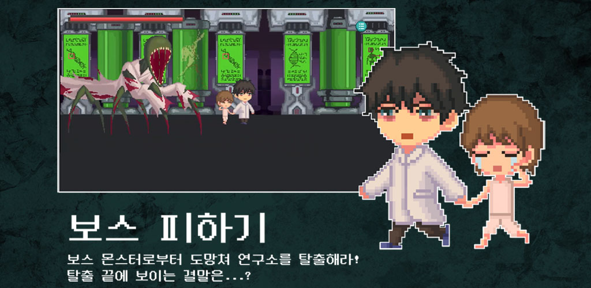

프로젝트 소개
본 프로젝트는 교내 게임 개발 동아리에서 주최한 해커톤의 공포 컨셉에 맞춰 제작되었습니다. 1주일이라는 짧은 시간 동안 유동적인 게임 진행 상태 저장과 몰입도 높은 상호작용 시스템을 구축하여 최종 대상 수상 및 플레이스토어 정식 출시라는 성과를 거두었습니다.

주요 개발 로직 & Evolution
# 카드 랜덤 셔플 알고리즘
Fisher-Yates 셔플 원리를 활용하여 카드의 ID 리스트를 무작위로 섞고, 2중 for문을 통해 지정된 그리드(4x5) 좌표에 동적으로 배치했습니다.
# 코루틴 기반 상태 제어
두 장의 카드를 뒤집었을 때 Coroutine을 활용하여 비동기적으로 매칭 여부를 확인하고, 불일치 시 유저가 이미지를 확인할 수 있도록 1초의 지연 시간을 준 뒤 다시 뒤집히도록 구현했습니다.
# 애니메이션 및 연출
DOTween 라이브러리를 사용하여 카드가 뒤집히는 물리적 움직임을 Scale 조절 방식으로 연출했습니다. OnComplete 콜백을 활용해 애니메이션 도중 스프라이트를 교체하여 자연스러운 3D 회전 느낌을 구현했습니다.
나의 역할 및 기여도 (30%)
클라이언트 개발
-
게임 시작 및 종료 UI/로직
전체적인 게임 루프와 UI 인터랙션 흐름 구현 -
Json 데이터 저장 시스템
플레이어 진행 상태 및 연구일지 수집 상태 영속성 관리
인게임 시스템 개발
-
카드 뒤집기 미니게임 설계
랜덤 배치 알고리즘, 코루틴 매칭 판정 로직 개발 -
애니메이션 및 수집 요소
캐릭터 Animator 상태 제어 및 연구일지 표시 시스템
도전과 극복
직면한 어려움
개발 인원으로 참여한 4명 모두 유니티 엔진을 처음 접해본 상황이었습니다.
1주일이라는 짧은 해커톤 기간 내에 유니티라는 낯선 툴에 적응하고, 동시에 C# 언어로 게임의 주요 기능을 모두 구현해야 하는 극한의 일정에 직면했습니다.
극복 및 해결 과정
1. 단계별 학습 및 효율적 역할 분담
기획이 구체화되는 동안 기존 C 언어 지식을 기반으로 C#의 특징과 유니티 API를 빠르게 학습했습니다. 팀원 개개인의 습득 속도에 맞춰 역할을 즉시 분배했습니다.
2. 적극적인 기술 매체 활용
복잡한 기술 패턴을 빠르게 습득하기 위해 유튜브 등 다양한 리소스를 적극 활용했습니다. 단순히 코드를 복사하는 것에 그치지 않고, 코루틴과 애니메이션의 연동 원리를 파악하여 프로젝트의 요구사항에 맞게 성공적으로 이식했습니다.
3. 디코드를 활용한 실시간 협업
마감 기한이 매우 짧았기에 디스코드를 통해 상시 화면을 공유하며 발생하는 버그를 즉각적으로 피드백하고 함께 해결했습니다. 이 긴밀한 소통이 대상 수상의 원동력이 되었습니다.
시연 영상
"희망 연구소의 비밀" 실제 플레이 및 핵심 시스템 시연
In-game Gallery

01. 몰입도 높은 대화 시스템
캐릭터 간의 대화 인터페이스를 통해 아포칼립스 세계관의 긴장감을 전달합니다.

02. 긴박한 실시간 교전
괴생명체로부터 생존하기 위한 실시간 교전 요소를 2D 환경에 구현했습니다.

03. 강력한 보스와의 추격전
스테이지를 탈출하기 위한 긴박한 보스 교전 및 도주 시퀀스입니다.

04. 상호작용 미니게임
전력 복구 등을 통해 게임 진행의 실마리를 찾는 카드 뒤집기 퍼즐입니다.
05. 세계관 비주얼 (대표 이미지)
연구소의 어두운 분위기와 도망치는 연구원의 긴박함을 담은 메인 비주얼입니다.
마무리하며
희망 연구소의 비밀은 저에게 게임 개발에 흥미를 가지게 된 소중한 계기였습니다. 이를 통해 유니티 학습의 필요성을 깊이 느껴 전공 수업을 수강하게 되었고, 이후 다양한 심화 프로젝트를 진행하게 만들어준
게임 개발자로서의 명확한 시작점이 되었습니다.
짧은 시간 안에 새로운 기술을 배우는 것에 대한 두려움 없이 과감하게 도전에 임했습니다. 앞으로도 더 나은 결과물을 도출하기 위해, 배움을 멈추지 않고 목적에 최적화된 기능을 구현해내는 역량 있는 개발자가 되겠습니다.
"새로운 지식에 대한 높은 습득력과 과감한 도전 정신으로 더 나은 결과를 만들어내겠습니다."